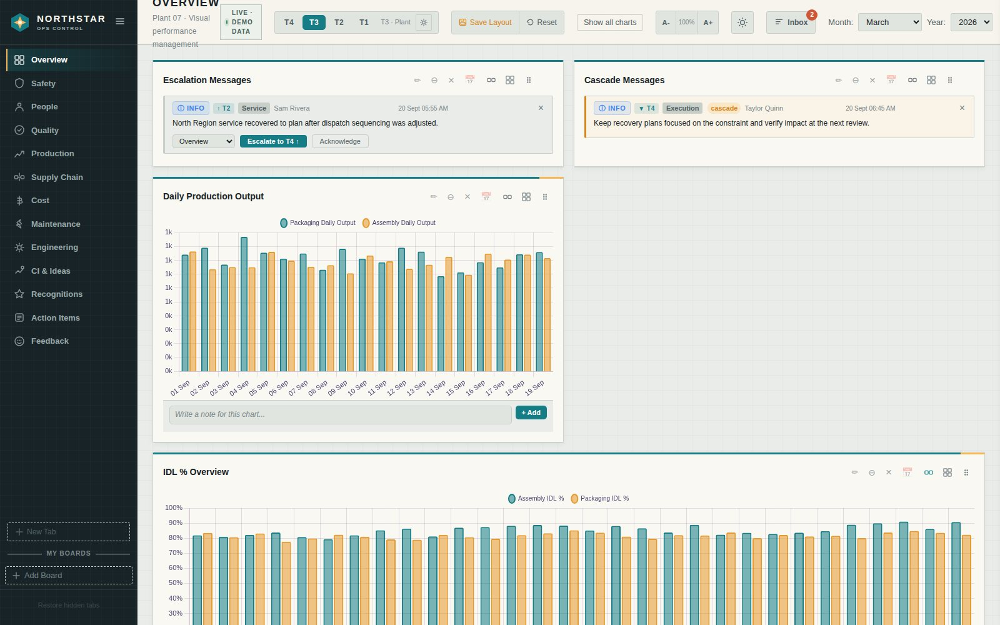
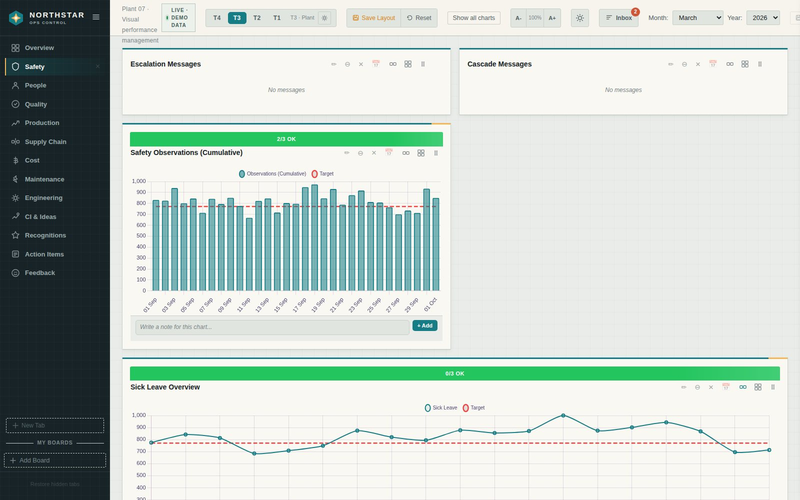
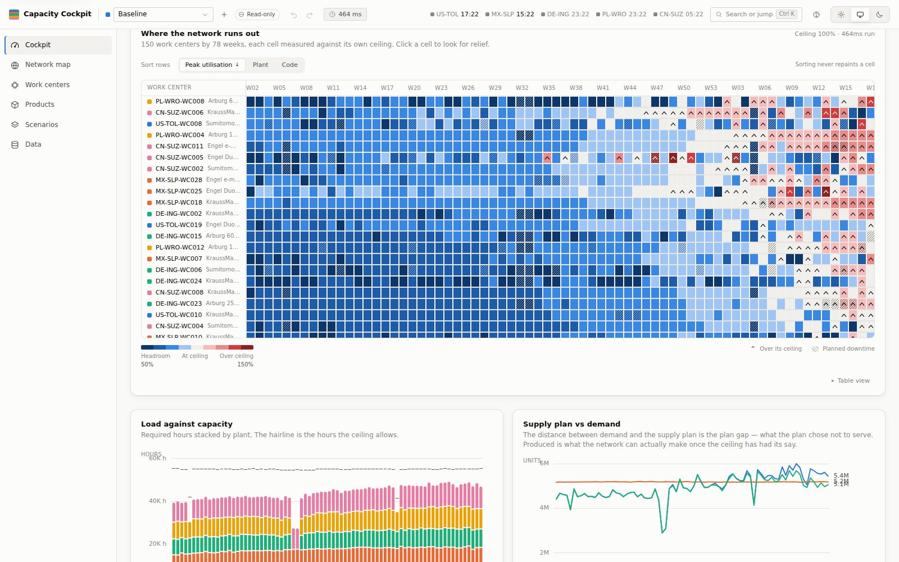
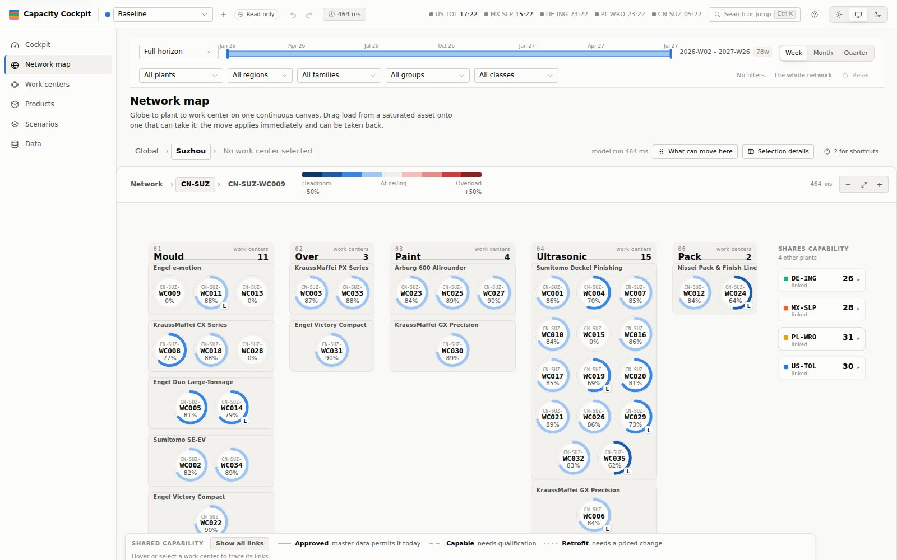
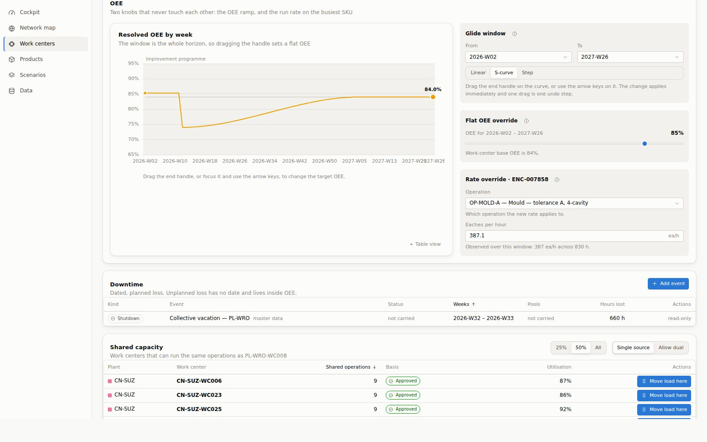

Operations portfolio · October 2026
Three operations tools, each built end to end: a performance board for the plant, a scanning app for the warehouse floor, and a what-if model for factory capacity.
The thread
One board for how the plant is performing against target, with a clear path for escalating problems up and passing decisions down.
Stop re-typing pallet data. Scan at the pallet, confirm once, and keep the records the business already relies on accurate.
Find where five factories run out of hours, work out whether the fix is machines or people, and test it before spending anything.
Data honesty: every number and screenshot in this deck comes from synthetic or generated data. Nothing here is real plant, company or inventory data.
01 · See · VPM Dashboard
01 · See · What it looks like


02 · Capture · Warehouse capture app
02 · Capture · How it is built
Offline-first app on staff phones. Reads barcodes, keeps photos as evidence.
Pallet records, photos and an append-only audit trail, hosted in the EU.
The only thing that writes to the master spreadsheet or talks to the ERP.
Updated spreadsheet, expiry digests, and ERP corrections in approved batches.
Illustrative diagram. App screens are not shown because this project is private and holds real warehouse workflow detail.
03 · Decide · Capacity Cockpit
03 · Decide · Find it
150 machines by 78 weeks. Blue is spare capacity, grey is at the limit, red is over it, and the hatch marks planned downtime. The pattern is the story: comfortable now, tight later.

03 · Decide · Fix it


A real finding from building it: a plant-wide efficiency ramp first appeared to make things worse, because seeded master data silently outranked the planner's own scenario. It is fixed, and a test now fails if it ever returns.
Where each one stands
| Tool | Status | Data today | Suggested next step |
|---|---|---|---|
| VPM Dashboard | Working prototype | Synthetic, public demo | Pilot one real plant board with a single tier team |
| Warehouse capture app | Specified, partly built | None yet; private project | On-site pilot on one aisle, measuring field corrections |
| Capacity Cockpit | Working, hosted | Generated, SAP-shaped | Load one real plant extract and compare with today's plan |
Next steps are proposals for discussion, not commitments.
What connects them
No servers to run and nothing to install, so a pilot starts with a link rather than a project.
Escalations are routed to people, ERP fixes wait for approval, and every scenario move can be undone.
Each tool states what it does not do, and none claims results it has not measured.